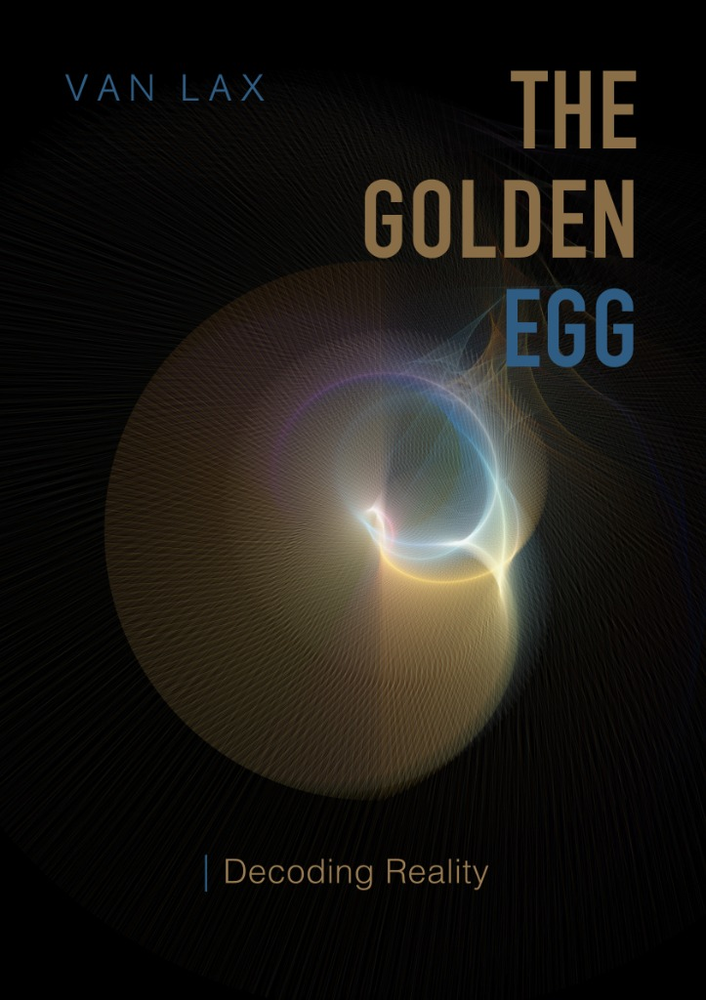
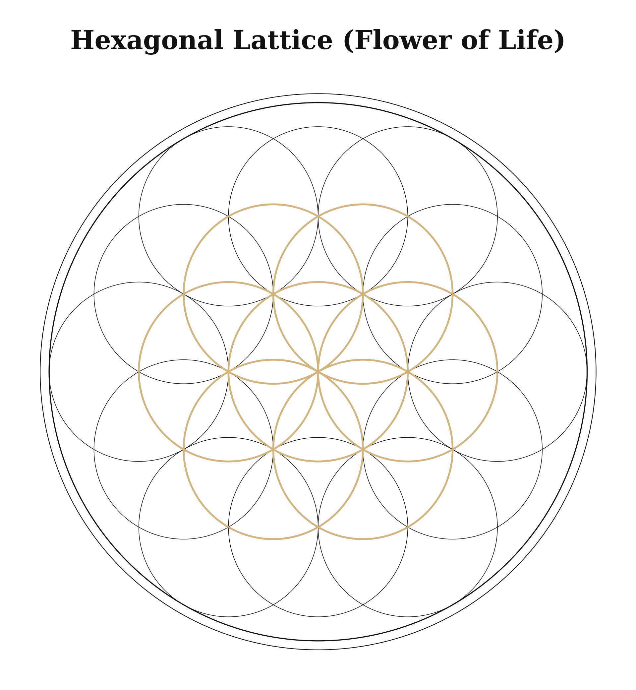
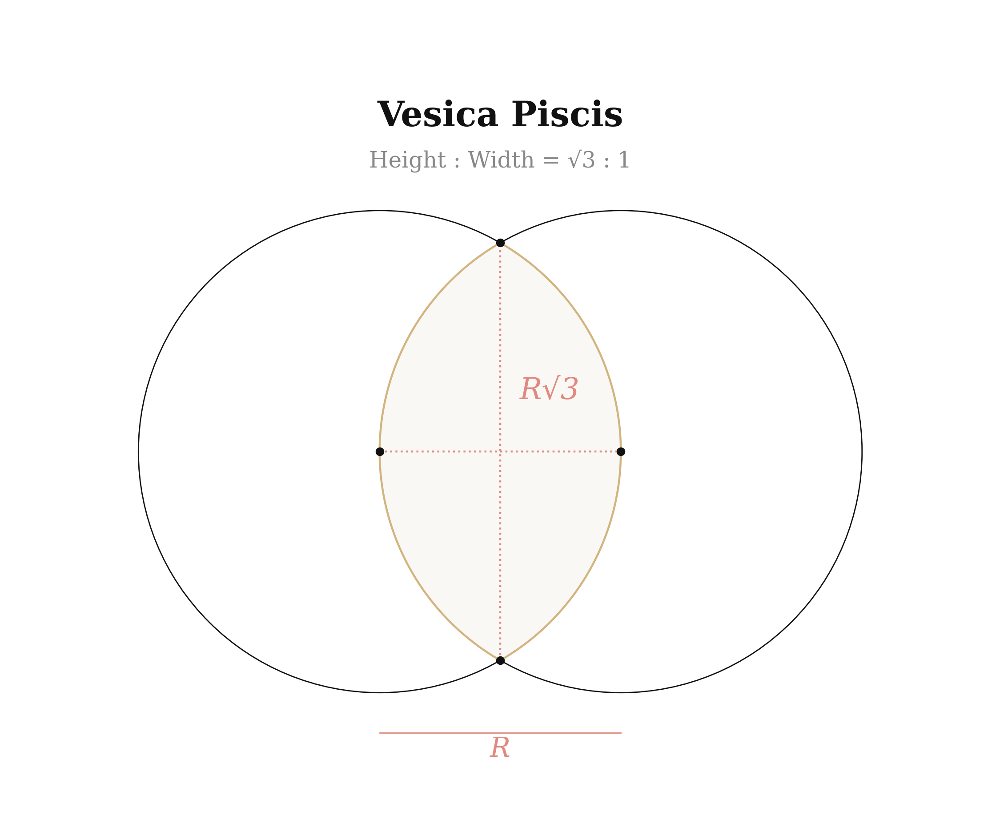
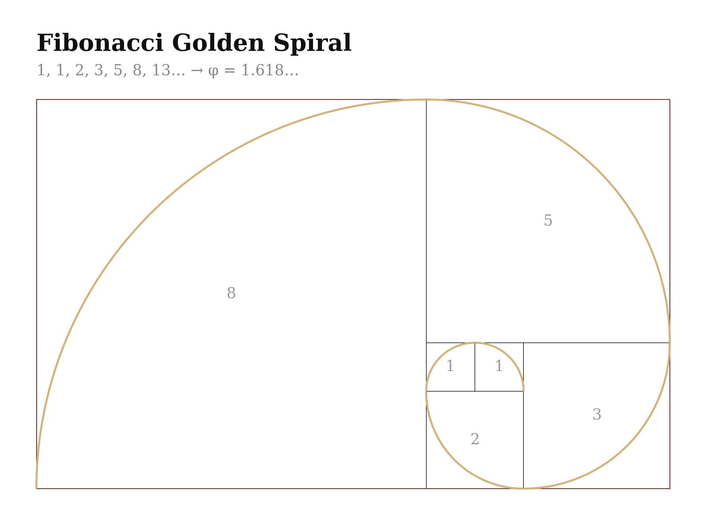
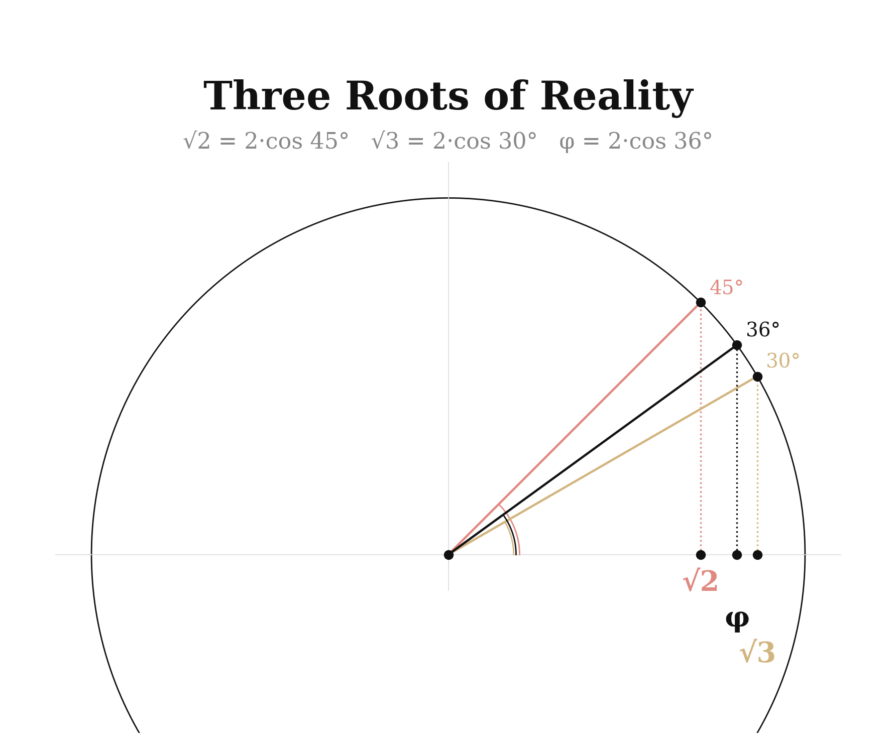
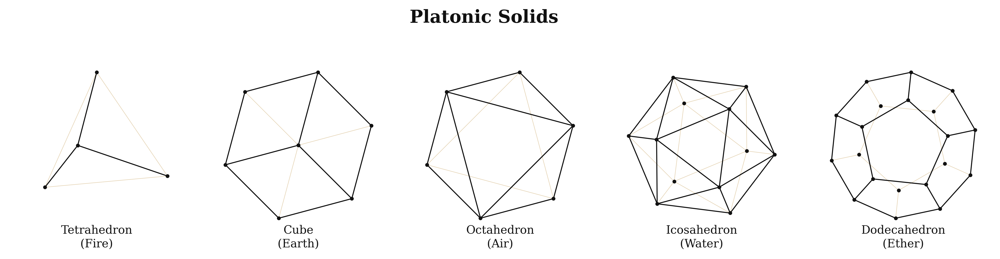
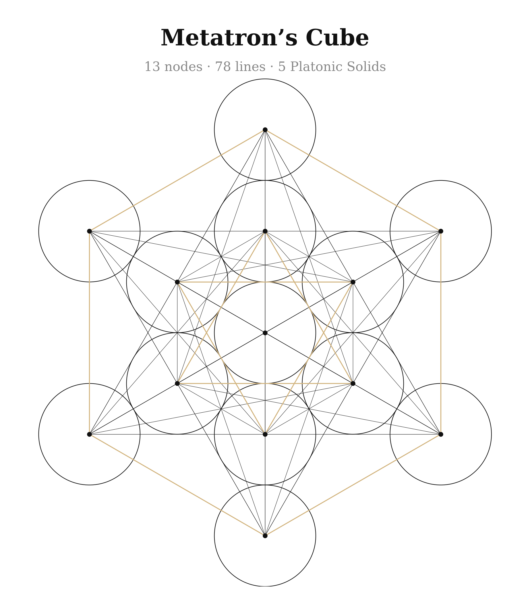
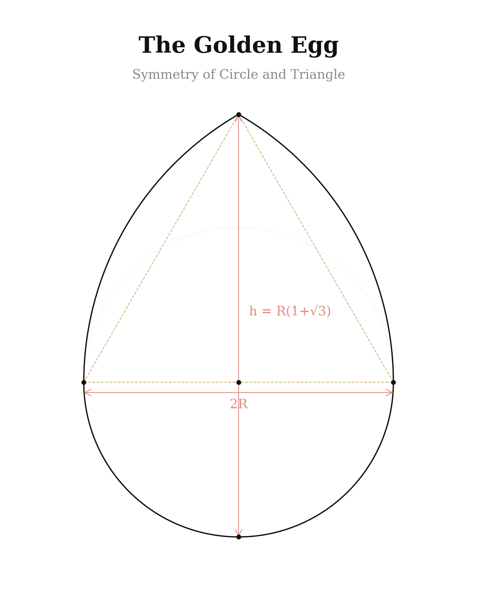

The Golden Egg
Prologue
The Speckled Hen and the Hidden Design of the Universe
The ordinary fairy tales we heard as children seemed simple and naive. Yet if one looks deeper, behind them lie the mysteries of creation, encoded in images and symbols.
Let us recall the tale of the Speckled Hen. What is this golden egg that the hen laid? Why could neither the old man nor the old woman crack it? Why was it the mouse that broke it in the end?
If we unfold this plot onto a philosophical plane, deeper meanings emerge:
- The golden egg is knowledge, truth, the hidden harmony of the world.
- The old man and old woman represent humanity, striving to unravel the secrets of existence.
- They try to crack the egg — to reach truth by brute force — but nothing comes of it.
- The mouse, an inconspicuous creature, does it by sheer chance, as though hinting that truth reveals itself not through violence against the world, but through a natural process.
This fairy tale is a code left to us by our ancestors. It says:
Not everything in this world needs to be deciphered. Some mysteries need only be accepted, contemplated, felt. And then they will reveal themselves to you at the right moment.
Perspective and Point of View
The world is not a single, static picture. The world is perspective, a point of view, an angle of observation.
Take a simple line. Viewed from the front, it appears as a dot. From the side — a stripe. In three dimensions — an edge.
Now imagine the line is moving. From one angle, it travels from point A to point B. From another vantage point, it is already a plane changing its position in space. And from a third dimension, the line may turn out to be a spiral or even an infinite curve with no end.
What if everything you know is merely a line that you see from only one angle?
From the Author: The Life of an Observer
I want to be utterly honest and open with you, dear reader. For a long time, my persona remained in the shadows for many in my circle.
For a long time, I believed the essence of understanding the world lay in taking it apart. We are accustomed to analysing reality, splitting it into components, striving to penetrate its mechanisms. But one day I stopped. And asked myself: what if the world does not require explanations at all? What if it asks not for analysis, but for simple, sincere contemplation?
When I was twelve, I left Russia and found myself in a British boarding school. For a child, it was chaos — an alien language, alien rules, an alien world. At thirteen I composed my first piece — an étude lasting twenty minutes, holding the entire composition in my head, without a single note on paper. Music saved me from chaos.
This book is not merely a collection of thoughts. It is a path, the length of my life. The path of an observer.
The question I pose to myself and to you, reader: what will you choose — to crack the egg in search of meaning, or to accept its mystery?
The Map of This Book
This book is structured as a spiral — each turn deepens understanding.
- Part I — Perception. What is reality? Dreams, illusions, the multi-layered nature of the world.
- Part II — The Code. What is reality built upon? Numbers, geometry, language, symbols, light and dark matter.
- Part III — Energy. What drives reality? Attention, chaos, time, discipline.
- Part IV — Harmony. How does one enter the flow? Awareness, awakening, the golden ratio.
- Part V — Practice. How does one live this? The MAGE Formula, a 21-day experiment.
Let us together lift the veil on this world.

Part I

Chapter 1. The Observer and His World
«Truth does not exist. We are what we are prepared to believe.»
These words reveal the essence of our perception. It seems to us that the world before us is real, that we see it as it truly is. But in reality, each of us looks at it through the prism of convictions, knowledge, emotions and experience.
Illusion permeates everything. We believe in money, yet it is merely paper. We acknowledge the borders of nations, yet there are no drawn lines upon the Earth. What we believe in becomes our reality.
The world resembles a matryoshka, in which one layer is hidden behind another. The outer shell is the material world. Beneath it — information. Deeper — convictions. Then — emotions. And at the very centre — the point of awareness, pure perception.
Quantum physics added scientific weight to this. The double-slit experiment showed that a particle behaves differently depending on whether it is being observed or not. Perhaps we are not merely observing reality — we are creating it.
Chapter 2. Dreams: More Real Than Reality
«In truth, through dreams we learn to govern this manifest reality of ours.»
Close your eyes. Recall a dream so vivid that, upon waking, you could not immediately tell — where was reality? In the dream you saw, heard, smelt, touched. Yet your eyes were closed. Who painted that world for you?
The mind. Only the mind.
Every night we leave the world of familiar laws and travel to a dimension where anything is possible. We fly, pass through walls, speak with those who are no longer here. But if consciousness can build such realities in sleep, how does this process differ from what occurs when we are awake?
Christopher Nolan's film Inception brilliantly explores this idea: a dream within a dream — nested layers of reality, each of which feels utterly real.
True wisdom lies not in recognising that reality is a dream, but in awakening within it and beginning to consciously create one's life.
Chapter 3. The Matryoshka of Worlds
«Meanings are the most important thing in our lives»
Every morning we wake not simply because we do, but because we believe in the meaning of a new day. We work because we consider money important. We build relationships because we sense the value of love.
But what if all these meanings are not objective? What if money is merely numbers in a system? What if love is biochemistry?
Money as a Construct of Meaning
Money is one of the most powerful examples of how collective belief becomes reality. A paper banknote is worth nothing in itself. The entire system works only because we collectively believe: this symbol equals value.
Factories of Meaning
Whoever controls meaning controls perception.
Hollywood is one of the most powerful generators of meaning in history. Through cinema, billions of people are fed models of behaviour, values, fears and dreams. Social media have perfected this: algorithms analyse your reactions and construct your feed to maximise the capture of attention. You do not consume content — content consumes you.
The Stupor
«Everything you see, hear, feel — it is all part of the spectacle. So that you never pause to wonder what goes on behind its curtain.»
The world is as if shrouded in a haze of sleep. We live in reality, yet see it through a prism of illusions that hold our attention inside the game.
So that we might sleep with our eyes open, they created the cinematograph. So that the ears might dwell in a pleasant stupor, they created music. For those who seek pleasure in food, they made flavours exquisite.
But what if one were to reduce the importance of all this? Not reject, not fight, but simply recognise the game. Watch, but do not lose oneself in images. Listen, but do not drown in sounds. Feel, but do not become a slave to feelings. Think, but do not identify with thoughts.
Then reality changes. The world begins to shimmer in a different light.
Part II
Chapter 4. Numbers and Sacred Geometry
«All is structure. Without structure there is no form. Without form there is no matter.»
Sacred Geometry is an ancient science that studies the symbolic meaning of geometric shapes. It explores how specific angles and figures reflect the fundamental principles of the universe.
Pythagoras declared: 'Numbers are the essence of all things.' The number 3 symbolises creation. The number 7 — harmony of being. The number 12 governs time and cyclicality.
Galileo Galilei said: 'Geometry is the language in which God speaks.' The Fibonacci spiral is reflected in shells and galaxies; fractals repeat in leaves, lungs and the circulatory system; hexagons appear in honeycombs and crystalline lattices.

The Mathematical Code of Ancient Texts
I conducted a thorough analysis of the numerical values in the Bible, cross-referencing them with sacred geometry. The result astonished me: the numbers form a precise mathematical framework.
The seven days of Creation — six circles arranged around a single central one form the 'Seed of Life'. 6 days + 1 day of rest = the geometric constant.
Noah's Ark — 300 × 50 × 30 cubits. Width/height = 5/3 ≈ 1.667, an approximation of the golden ratio φ = 1.618.
The Ark of the Covenant — 2.5 × 1.5 × 1.5 cubits. Length/width = 5/3 — the very same proportion.
Solomon's Temple — its heart, the Holy of Holies, is a perfect cube: 20 × 20 × 20. The same cube described in the New Jerusalem.
The number 144,000 — 144 is a Fibonacci number, and the only one that is a perfect square. It stands in the 12th position of the Fibonacci series.
The Formulae of Creation: Three Roots of Reality
√2 — the diagonal of a square. Used in Gothic cathedrals and the A-paper format.
√3 — the height of an equilateral triangle and the proportion of the Vesica Piscis — the 'womb of creation'.

φ (phi) — the golden ratio ≈ 1.618. Hidden in the nautilus shell, galaxy arms, sunflower seeds, DNA, the Parthenon, Stradivari violins.

All three roots are linked through π: √2 = 2·cos(45°), √3 = 2·cos(30°), φ = 2·cos(36°). The circle contains everything.

Five Building Blocks of the Universe
In all of infinite space there exist only five perfectly regular solid forms — the Platonic solids:
- Tetrahedron (4 faces) — Fire
- Cube (6 faces) — Earth
- Octahedron (8 faces) — Air
- Icosahedron (20 faces) — Water. Its formulae contain φ, the golden ratio!
- Dodecahedron (12 faces) — The Universe, Aether

Metatron's Cube: The Master Blueprint
13 points. 78 lines. One blueprint that contains all five Platonic solids.

The Golden Egg Is the Geometry of Life
The egg — the symbol of life and birth — is built upon the very same laws. Take a circle. Inscribe an equilateral triangle. From its vertices, draw arcs. The result is the perfect contour of an egg — containing the circle, the triangle, and √3.

Three proportions. Five solids. One blueprint. These are the formulae upon which reality stands. Honeycombs, snowflakes, crystals, flowers, spirals, stars — all speak the same language. And that language is geometry.
Chapter 5. The Word as Vibration
«In the beginning was the Word.»
We are accustomed to thinking of language as merely a tool of communication. But what if words are something greater? A word carries vibration, and vibration creates form.
Ernst Chladni proved that sound vibrations create geometric patterns — sprinkle sand on a metal plate and draw a bow across it to see how chaos instantly arranges itself into perfect structures.
In all ancient traditions, the word held sacred significance. The Vedas, the Quran, the Bible — all these texts function as active codes, transforming consciousness.
Language is the key to shaping reality. Every word carries a charge. Speak consciously, utter words that carry strength and harmony, and you will see how not only your consciousness changes, but the very world around you.
Chapter 6. The Hermetic Principle
«As above, so below; as below, so above.»
An atom repeats the structure of the solar system. The neural network of the brain is indistinguishable from a map of the Universe. The spiral of DNA is the same spiral as a galaxy.
Fractals — every part contains the whole. Every level reflects all others.
If the microcosm reflects the macrocosm, then a change within you is a change in the world. Not metaphorically. Literally.
The Bible states: 'Know ye not that your bodies are the temple of the Holy Ghost?' The human spine consists of 33 vertebrae. Jesus was crucified at 33. Golgotha translates as 'skull'. The crucifixion takes place in the head.
In our brain there are approximately 100 billion neurons — the same number as the stars in our Galaxy. We are not a 'likeness' of the Universe. We are the Universe in miniature.
Chapter 7. Light and Dark Matter
«Imagine that rays of light, carrying photons, are filled with diverse information, penetrating only those structures ready to receive it.»
What if light carries not only energy, but information? Every photon that touches your skin carries more than warmth. It carries the rhythm of the Universe.
Within this Universe there is also a reverse side — dark matter. It does not shine. Yet its influence is palpable. It holds galaxies together. Approximately 85% of the Universe's mass consists of dark matter — invisible, intangible, yet real.
Light and darkness are not opposites. They are two wings of the same bird. Light carries information; darkness creates the space for its reception.
End of Part II — The Code
Continue Reading?
You have reached the end of the free preview. The full book includes Parts III–V: Energy, Harmony, and Practice — with the MAGE Formula and 47 Golden Thoughts.